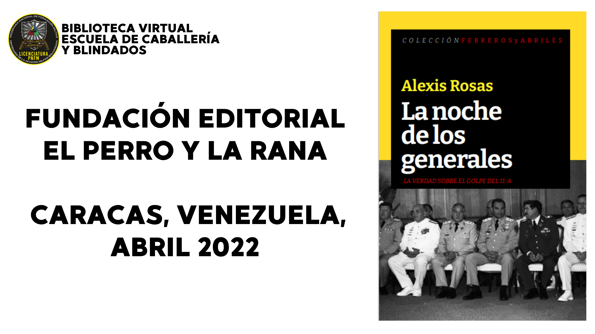
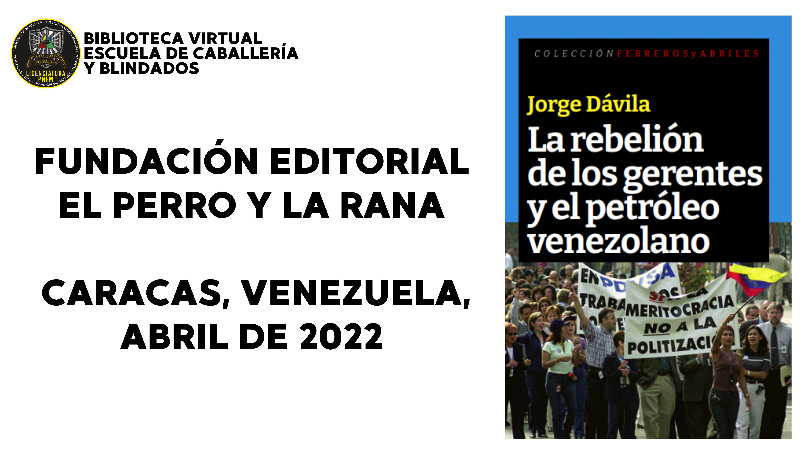
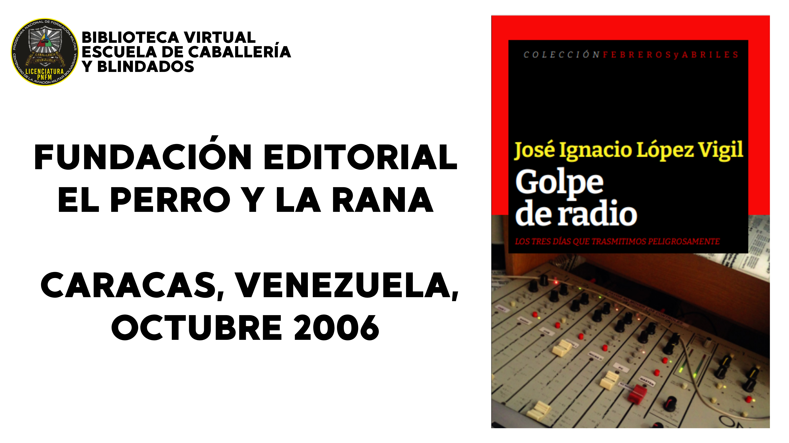

EN LA ACTUALIDAD, LOS AVANCES TECNOLÓGICOS NOS PROPORCIONAN HERRAMIENTAS QUE ELIMINAN LAS BARRERAS DE LA DISTANCIA. GRACIAS A LA IMPLEMENTACIÓN DE APLICACIONES ESPECÍFICAS, ES POSIBLE OFRECER UNA EXPERIENCIA ENRIQUECEDORA Y EFECTIVA DURANTE LAS CLASES EN LÍNEA. ADEMÁS, ESTAS MISMAS HERRAMIENTAS PUEDEN FUNCIONAR COMO UNA BASE DE DATOS ROBUSTA PARA DARLE OTROS USOS, LO CUAL ES ESENCIAL PARA LA MODERNIZACIÓN DE LA ESCUELA DE CABALLERÍA Y BLINDADOS.
Proximamente Descarga